Surfaces and shot charts
Source:vignettes/articles/cookbook-surfaces-shot-charts.Rmd
cookbook-surfaces-shot-charts.RmdOn this page
Ten recipes for playing surfaces and the charts drawn on them:
sdv_surface() for every sport it supports, team colors and
a center logo, NBA and WNBA shot charts from the stats-API shot files
(moved onto the court with sdv_court_coords()), a vertical
half court, a college shot chart from ESPN’s locations, a hockey goal
map, a baseball field and a football drive chart. The surfaces are drawn
by sportyR. The data
is one season each from the NFL (nflreadr), the NBA, WNBA and college
basketball (hoopR and wehoop), the NHL (fastRhockey) and MLB
(baseballr). The NBA and WNBA shots are the stats-API shot files the
SportsDataverse publishes as GitHub releases, so nothing here calls
stats.nba.com or stats.wnba.com.
library(sdvplotR)
library(ggplot2)
library(dplyr, warn.conflicts = FALSE)
# sportyR's surfaces have no plot margin, which clips a title; give it room
titled <- theme(plot.margin = margin(12, 10, 8, 10))1. Every surface sdvplotR can draw
sdv_surface(sport) picks sportyR’s regulation surface
for the league: a football field for the NFL and college football (their
hash marks differ), a court for the NBA, the WNBA and college
basketball, a rink and a baseball field. Surfaces use sportyR’s
coordinates: the origin at the center, in feet (yards for football), and
the baseball field’s origin at home plate.
surfaces <- c(
nfl = "NFL field", cfb = "College football field", nba = "NBA court",
wnba = "WNBA court", mbb = "College basketball court (men's and women's)",
nhl = "NHL rink", mlb = "MLB field"
)
for (sport in names(surfaces)) {
p <- sdv_surface(sport) + labs(title = surfaces[[sport]]) + titled
# the baseball field paints the whole plot background grass green
if (sport == "mlb") p <- p + theme(plot.title = element_text(colour = "white"))
print(p)
}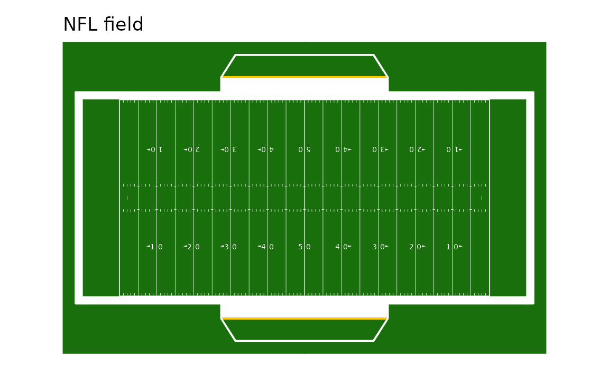
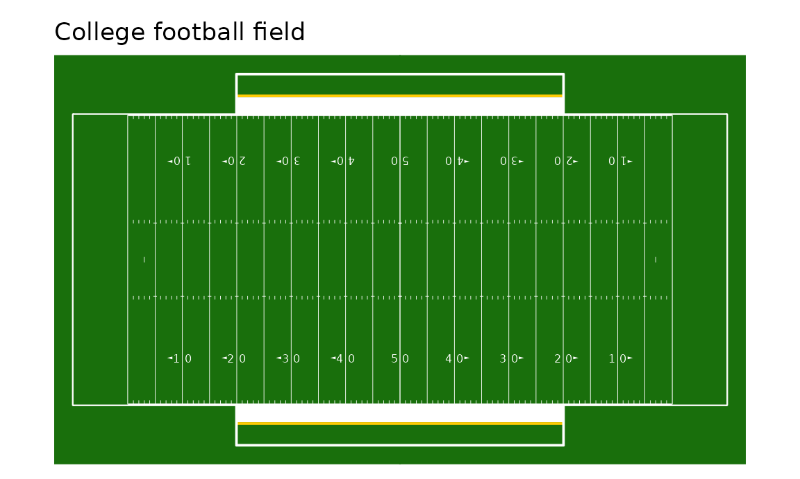
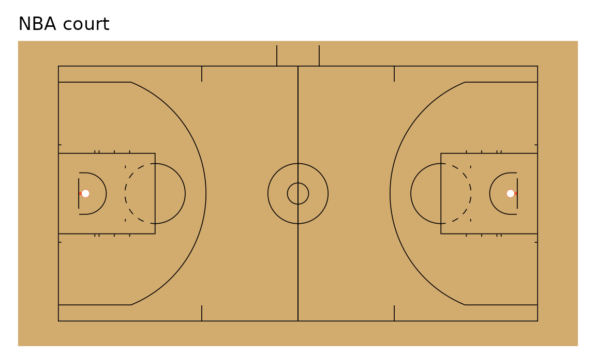
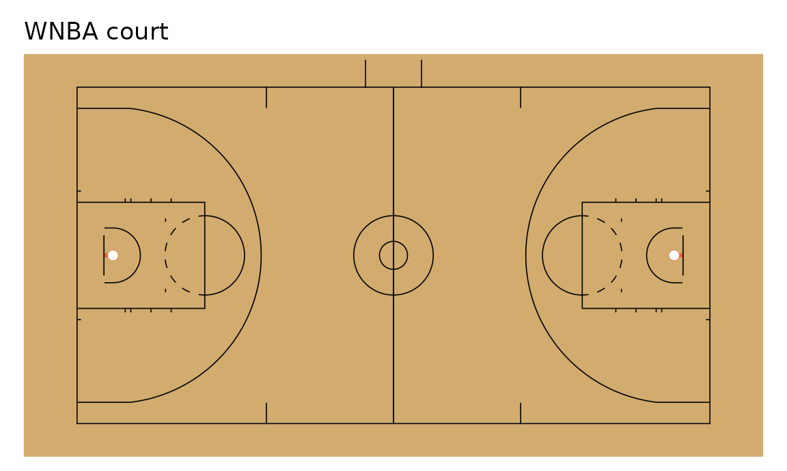
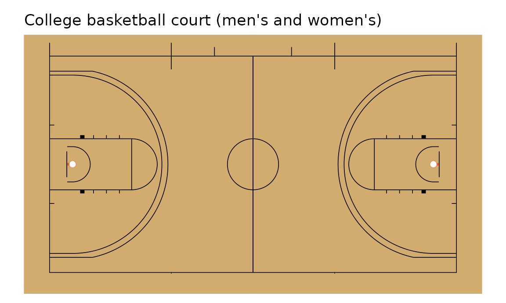
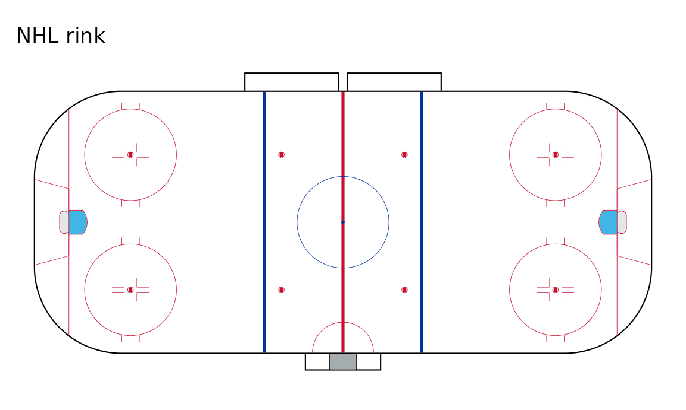
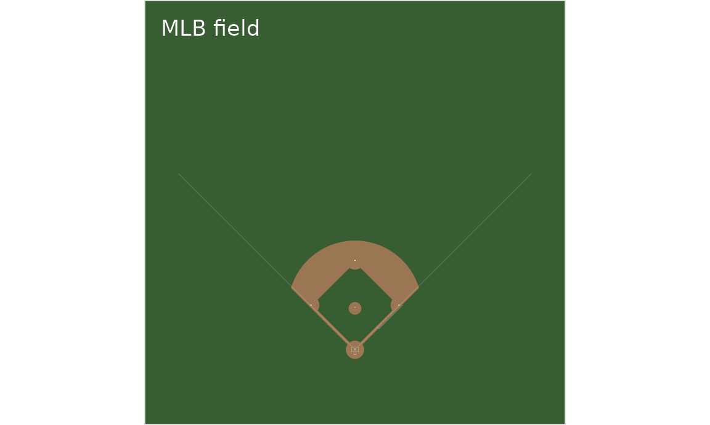
"wbb" draws the same college court as
"mbb". sportyR’s theme leaves no margin around the surface,
so each plot here adds one (titled, from the setup chunk)
to keep its title from being clipped.
2. The champion’s field, with a logo at midfield
Given a team, the surface takes its colors (end zones,
the paint and apron, the center ice markings and boards);
center_logo = TRUE adds its logo at the center. The Super
Bowl winner, read from nflverse’s schedule:
super_bowl <- nflreadr::load_schedules(2025) |>
as.data.frame() |>
filter(game_type == "SB")
champion <- with(super_bowl, if_else(home_score > away_score, home_team, away_team))
super_bowl[, c("away_team", "away_score", "home_team", "home_score")]
#> away_team away_score home_team home_score
#> 1 SEA 29 NE 13
sdv_surface("nfl", champion, center_logo = TRUE) +
labs(title = paste0("Super Bowl champions: ", champion), caption = "Data: nflreadr::load_schedules()") +
titled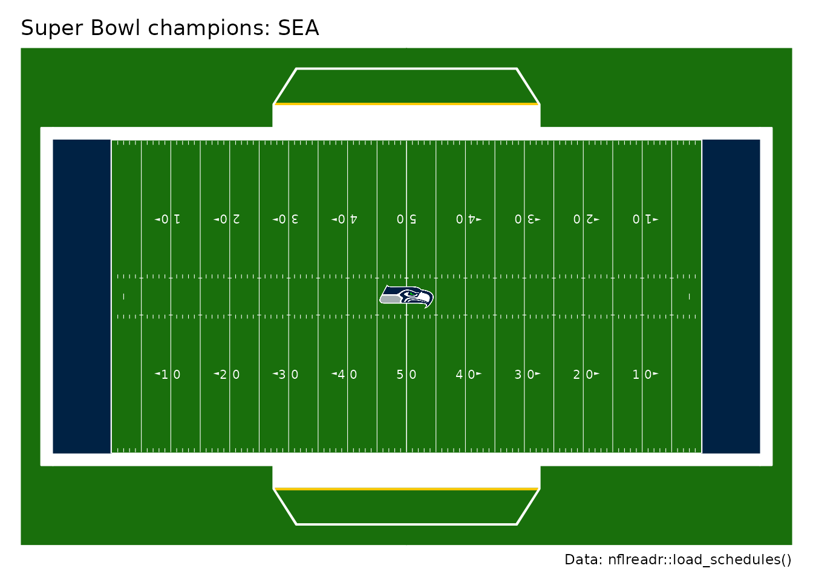
These are stylized surfaces from the team’s two colors, not the
stadium’s real paint; color_updates = (passed to sportyR)
overrides any feature.
3. Every basketball court, in its league’s top team
NBA, WNBA and college courts differ in their lines (the three-point arc, the lane width), and sportyR draws each league’s own. Each court here belongs to its league’s best team: the most regular-season wins for the pros, the best adjusted efficiency margin in men’s college basketball, and the best average scoring margin in the women’s game. The pros’ regular seasons leave out the All-Star and cup-final games, which ESPN also files as regular season.
most_wins <- function(schedule, box) {
standard <- schedule |>
as.data.frame() |>
filter(season_type == 2, type_abbreviation == "STD") |>
pull(game_id)
box |>
as.data.frame() |>
filter(game_id %in% standard) |>
summarise(wins = sum(team_winner), .by = team_abbreviation) |>
arrange(desc(wins), team_abbreviation) |>
slice_head(n = 1)
}
nba_best <- most_wins(hoopR::load_nba_schedule(2026), hoopR::load_nba_team_box(2026))
wnba_best <- most_wins(wehoop::load_wnba_schedule(2026), wehoop::load_wnba_team_box(2026))
mbb_ref <- team_reference("mbb")
mbb_best <- hoopR::load_mbb_ratings(2026) |>
as.data.frame() |>
mutate(team = mbb_ref$team_abbr[match(team_id, mbb_ref$espn_team_id)]) |>
filter(!is.na(team)) |>
slice_max(adj_em, n = 1, with_ties = FALSE)
wbb_d1 <- wehoop::load_wbb_standings(2026) |>
as.data.frame() |>
distinct(team_id)
wbb_best <- wehoop::load_wbb_team_box(2026) |>
as.data.frame() |>
filter(season_type == 2, team_id %in% wbb_d1$team_id) |>
summarise(margin = mean(team_score - opponent_team_score), .by = team_abbreviation) |>
slice_max(margin, n = 1, with_ties = FALSE)
best <- c(
nba = nba_best$team_abbreviation, wnba = wnba_best$team_abbreviation,
mbb = mbb_best$team, wbb = wbb_best$team_abbreviation
)
best
#> nba wnba mbb wbb
#> "OKC" "MIN" "MICH" "CONN"
for (sport in names(best)) {
print(
sdv_surface(sport, best[[sport]], center_logo = TRUE) +
labs(title = paste(toupper(sport), best[[sport]])) +
titled
)
}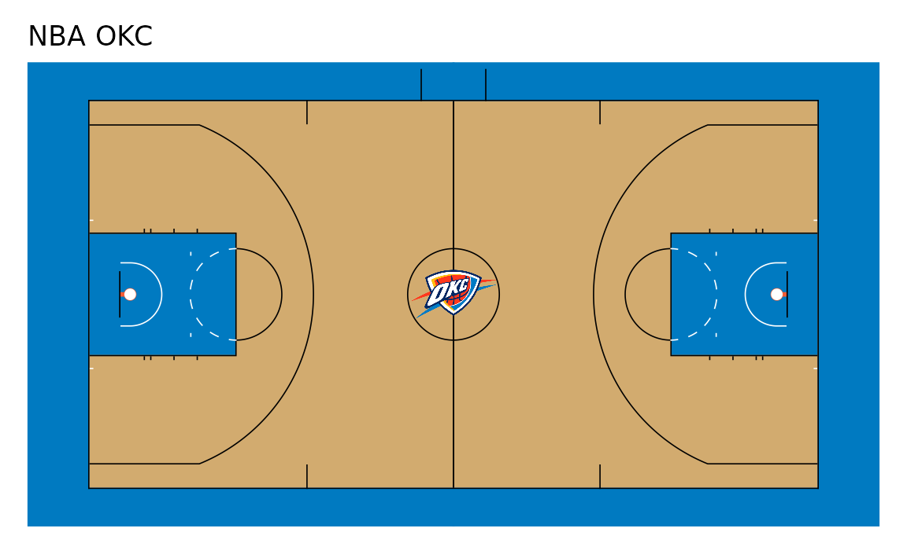
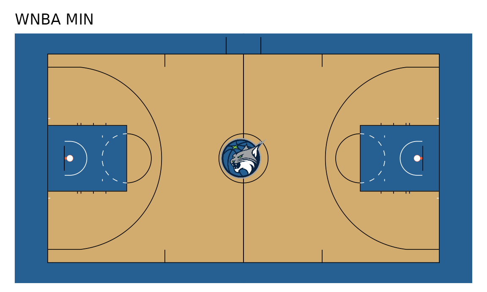
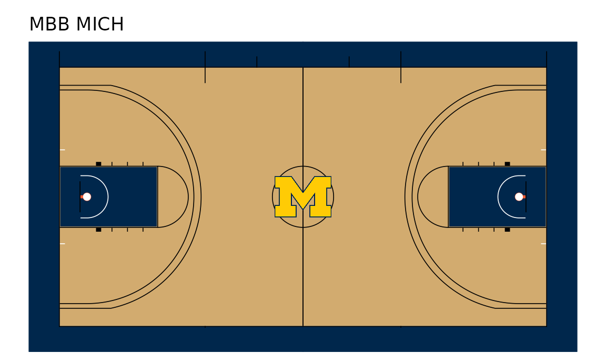
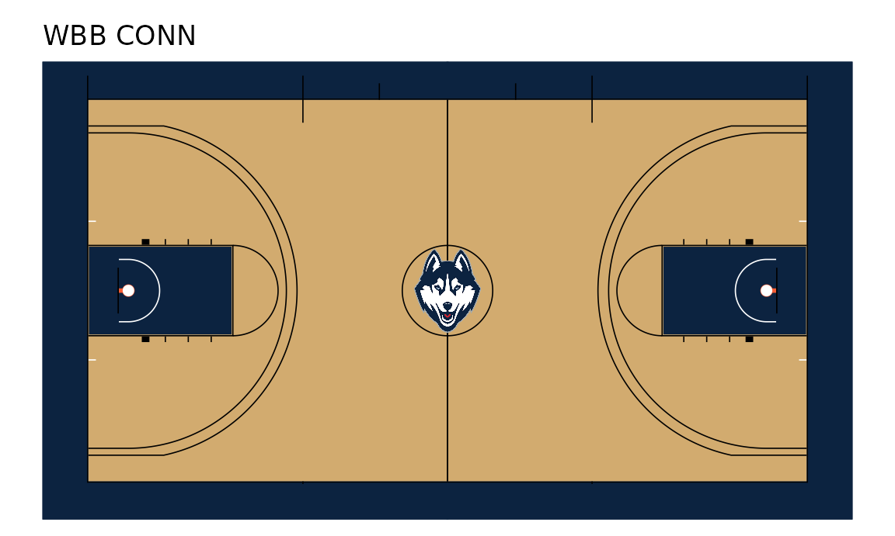
4. An NBA shot chart from the stats-API frame
hoopR’s load_nba_stats_shots() reads the stats-API shot
file the SportsDataverse publishes on GitHub: x_legacy /
y_legacy in tenths of a foot with the hoop at the origin.
sportyR’s court has its origin at center court, in feet.
sdv_court_coords() converts one to the other and adds
court_x / court_y; every shot lands on the
left half, so draw that half with
display_range = "defense". This loader names a season by
the year it starts (2025 is 2025-26), and a game id
starting 002 is the regular season. The season’s top scorer
from the floor:
nba_shots <- hoopR::load_nba_stats_shots(2025) |>
as.data.frame() |>
filter(substr(game_id, 1, 3) == "002")
stopifnot(all(nba_shots$season == 2026)) # the file's own season column is the ending year
leader <- nba_shots |>
summarise(
points = sum(shot_value[shot_result == "Made"]),
team = names(which.max(table(team_tricode))),
.by = c(person_id, player_name)
) |>
slice_max(points, n = 1, with_ties = FALSE)
leader
#> person_id player_name points team
#> 1 1629029 Dončić 1640 LAL
shots <- nba_shots |>
filter(person_id == leader$person_id) |>
sdv_court_coords()
head(shots[, c("x_legacy", "y_legacy", "court_x", "court_y")], 3)
#> x_legacy y_legacy court_x court_y
#> 1 -60 125 -29.25 -6.0
#> 2 18 259 -15.85 1.8
#> 3 -88 248 -16.95 -8.8
team <- clean_team_abbrs(leader$team, sport = "nba")
sdv_surface("nba", team, display_range = "defense") +
geom_point(aes(court_x, court_y, fill = shot_result), data = shots,
shape = 21, colour = "grey15", stroke = 0.25, size = 1.6, alpha = 0.8
) +
scale_fill_manual(
values = c(Made = unname(sdv_team_colors("nba", team)), Missed = "white"),
name = NULL
) +
labs(
title = paste0(leader$player_name, ", 2025-26 regular season"),
subtitle = sprintf("%s field goal attempts", format(nrow(shots), big.mark = ",")),
caption = "Data: hoopR::load_nba_stats_shots()"
) +
titled +
theme(legend.position = "bottom")
The paint is in the team’s primary color too, so a made shot drawn in
that color would vanish there: an outline (shape = 21)
keeps every dot visible. The stats API’s own tricodes (OKC,
GSW, SAS) go through
clean_team_abbrs() to sdvplotR’s keys. hoopR’s
nba_shotchartdetail() uses the same frame in
LOC_X / LOC_Y: pass those names to
sdv_court_coords().
5. The same for the WNBA
stats.wnba.com uses the same frame, so
sdv_court_coords() works unchanged, and
sdv_surface("wnba") draws the WNBA’s court, whose
three-point arc is closer to the basket than the NBA’s. wehoop’s loader
takes the season’s own year, and a game id starting 1022 is
the regular season:
wnba_shots <- wehoop::load_wnba_stats_shots(2026) |>
as.data.frame() |>
filter(substr(game_id, 1, 4) == "1022")
wnba_leader <- wnba_shots |>
summarise(
points = sum(shot_value[shot_result == "Made"]),
team = names(which.max(table(team_tricode))),
.by = c(person_id, player_name)
) |>
slice_max(points, n = 1, with_ties = FALSE)
wnba_leader
#> person_id player_name points team
#> 1 1628909 Mitchell 897 IND
wnba_team <- clean_team_abbrs(wnba_leader$team, sport = "wnba")
wnba_player <- wnba_shots |>
filter(person_id == wnba_leader$person_id) |>
sdv_court_coords()
sdv_surface("wnba", wnba_team, display_range = "defense") +
geom_point(aes(court_x, court_y, fill = shot_result), data = wnba_player,
shape = 21, colour = "grey15", stroke = 0.25, size = 1.7, alpha = 0.8
) +
scale_fill_manual(
values = c(Made = unname(sdv_team_colors("wnba", wnba_team)), Missed = "white"),
name = NULL
) +
labs(
title = paste0(wnba_leader$player_name, ", 2026 regular season"),
subtitle = sprintf("%s field goal attempts", format(nrow(wnba_player), big.mark = ",")),
caption = "Data: wehoop::load_wnba_stats_shots()"
) +
titled +
theme(legend.position = "bottom")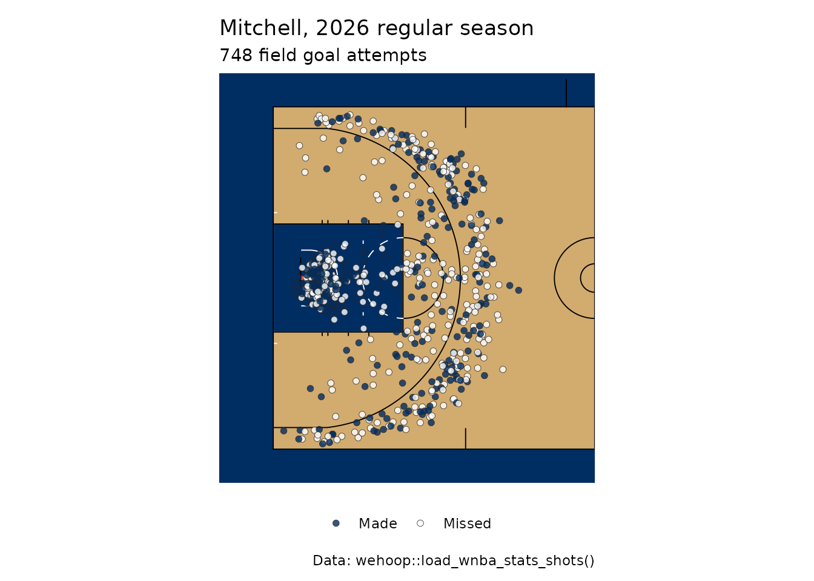
6. A vertical half court: rotate the surface and the data
sportyR’s rotation turns the drawing; turn the points
the same way. A quarter turn counterclockwise
(rotation = 90) maps each point (x, y) to
(-y, x) and puts the basket at the bottom, the way most
shot charts are drawn. display_range still names the half
of the unrotated court. The NBA’s second-leading scorer from the floor,
with a two-dimensional density of his attempts over the dots (both in
neutral colors, which read on the wood and on the team-colored
paint):
second <- nba_shots |>
summarise(
points = sum(shot_value[shot_result == "Made"]),
team = names(which.max(table(team_tricode))),
.by = c(person_id, player_name)
) |>
arrange(desc(points), person_id) |>
slice(2)
second_team <- clean_team_abbrs(second$team, sport = "nba")
turned <- nba_shots |>
filter(person_id == second$person_id) |>
sdv_court_coords() |>
mutate(x = -court_y, y = court_x) # a quarter turn counterclockwise
sdv_surface("nba", second_team, display_range = "defense", rotation = 90) +
geom_point(aes(x, y), data = turned, shape = 21, fill = "white", colour = "grey20",
stroke = 0.2, alpha = 0.6, size = 1
) +
geom_density_2d(aes(x, y), data = turned, colour = "black", linewidth = 0.4, bins = 8) +
labs(
title = paste0(second$player_name, ", 2025-26 regular season"),
subtitle = "Every field goal attempt, with density contours",
caption = "Data: hoopR::load_nba_stats_shots()"
) +
titled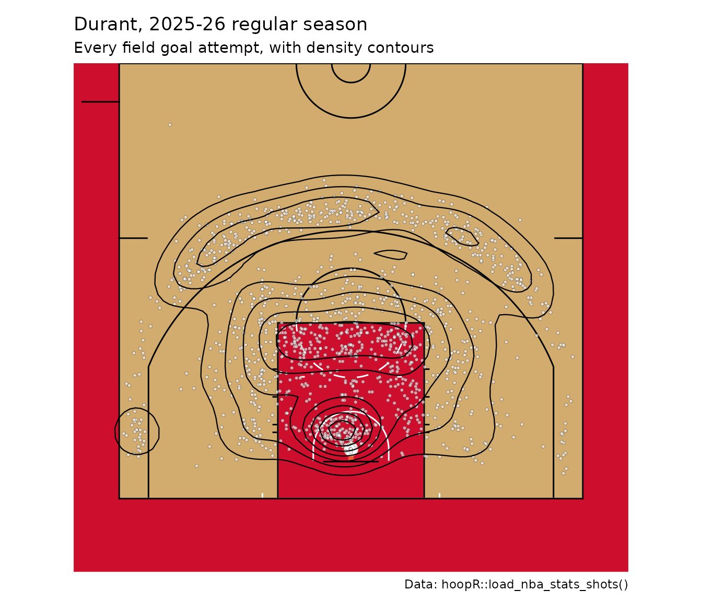
rotation = 270 (or -90) puts the basket at
the top, with points mapped to (y, -x).
7. A college shot chart from ESPN’s locations
hoopR’s and wehoop’s ESPN shot files (load_mbb_shots(),
load_wbb_shots()) are in a different frame:
coordinate_x / coordinate_y are already feet
from center court, with each team’s shots at the basket it attacks.
Don’t pass them to sdv_court_coords(). To put every shot at
one basket, turn the ones at the right-hand basket half a turn (flip
both signs), then draw the left half. A few rows hold placeholder values
far off the court, so keep the ones on it. The women’s game’s
highest-volume shooter, 2025-26:
wbb_shots <- wehoop::load_wbb_shots(2026) |>
as.data.frame() |>
filter(
!grepl("FreeThrow", type_text),
abs(coordinate_x) <= 47, abs(coordinate_y) <= 25
)
volume <- wbb_shots |>
count(athlete_id_1, athlete_name_1, team_abbrev, name = "attempts") |>
arrange(desc(attempts), athlete_id_1) |>
slice_head(n = 1)
volume
#> athlete_id_1 athlete_name_1 team_abbrev attempts
#> 1 5174674 Hannah Hidalgo ND 714
college <- wbb_shots |>
filter(athlete_id_1 == volume$athlete_id_1) |>
mutate(
flip = coordinate_x > 0,
x = if_else(flip, -coordinate_x, coordinate_x),
y = if_else(flip, -coordinate_y, coordinate_y),
result = if_else(scoring_play, "Made", "Missed")
)
sdv_surface("wbb", volume$team_abbrev, display_range = "defense") +
geom_point(aes(x, y, fill = result), data = college,
shape = 21, colour = "grey15", stroke = 0.25, size = 1.7, alpha = 0.8
) +
scale_fill_manual(
values = c(Made = unname(sdv_team_colors("wbb", volume$team_abbrev)), Missed = "white"),
name = NULL
) +
labs(
title = paste0(volume$athlete_name_1, ", 2025-26"),
subtitle = sprintf("%s field goal attempts, every game", format(nrow(college), big.mark = ",")),
caption = "Data: wehoop::load_wbb_shots() (ESPN)"
) +
titled +
theme(legend.position = "bottom")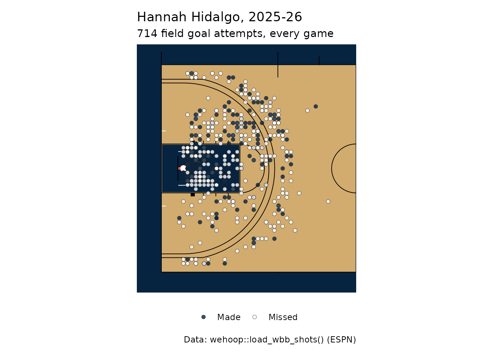
The college court and the NBA’s share the 94-foot floor and the basket 5.25 ft from the baseline, so these feet need no scaling.
8. A hockey goal map on a team-colored rink
fastRhockey’s play-by-play x / y are feet
on the NHL rink’s frame, the one sportyR draws, with the origin at
center ice. Teams switch ends each period, so turn every goal at the
left-hand net half a turn (flip both signs) to put them all at the
right-hand one, then draw the attacking half with
display_range = "offense". The season file is large (every
event of every game), so keep only the goals and let the rest go. The
league’s top goal scorer, regular season, shootouts left out:
goals <- fastRhockey::load_nhl_pbp(2026) |>
as.data.frame() |>
filter(event_type == "GOAL", season_type == "R", period_type != "SHOOTOUT") |>
select(game_id, event_team_abbr, event_player_1_id, event_player_1_name, x, y, empty_net)
invisible(gc())
scorer <- goals |>
count(event_player_1_id, event_player_1_name, event_team_abbr, name = "goals") |>
arrange(desc(goals), event_player_1_id) |>
slice_head(n = 1)
scorer
#> event_player_1_id event_player_1_name event_team_abbr goals
#> 1 8477492 Nathan MacKinnon COL 53
his <- goals |>
filter(event_player_1_id == scorer$event_player_1_id, !is.na(x)) |>
mutate(
x_net = if_else(x < 0, -x, x),
y_net = if_else(x < 0, -y, y),
net = if_else(empty_net, "Empty net", "Goalie in net")
)
nhl_team <- clean_team_abbrs(scorer$event_team_abbr, sport = "nhl")
sdv_surface("nhl", nhl_team, display_range = "offense") +
geom_point(aes(x_net, y_net, shape = net), data = his,
size = 2.6, fill = sdv_team_colors("nhl", nhl_team, type = "secondary"), colour = "black", stroke = 0.4
) +
scale_shape_manual(values = c(`Goalie in net` = 21, `Empty net` = 24), name = NULL) +
labs(
title = sprintf("%s's %d goals, 2025-26", scorer$event_player_1_name, scorer$goals),
subtitle = "Regular season, from where each was shot",
caption = "Data: fastRhockey::load_nhl_pbp()"
) +
titled +
theme(legend.position = "bottom")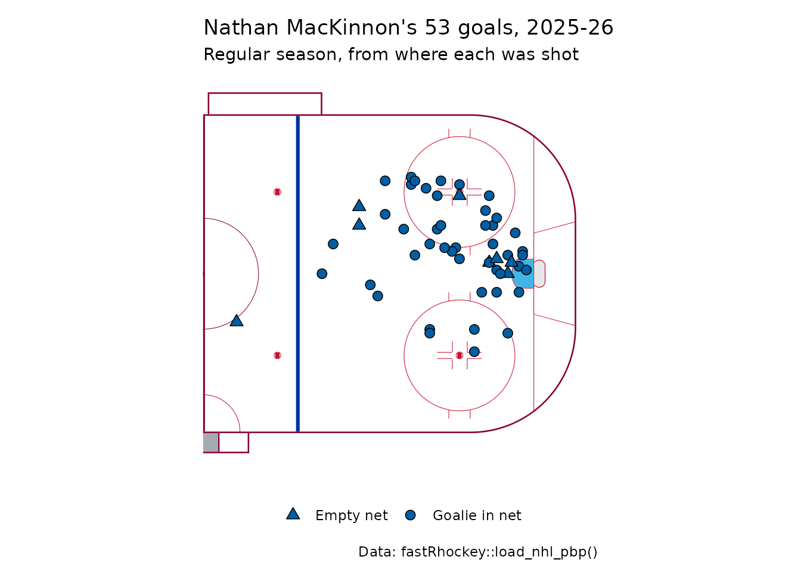
x_fixed / y_fixed in the same file already
put the home team’s shots on the right, but they mirror the away team’s
(only x changes sign); the half turn here keeps each shot
on the side it was taken from.
9. A baseball field with a logo in center field
Baseball fields have no team-colored lines, so
sdv_surface("mlb", team) draws the regulation field, and
the origin is home plate, so a center logo would sit on the plate
(center_logo warns and skips it). The field also paints the
whole plot background green, so set titles in white. Draw the field,
then place the logo yourself, in center field about 330 ft out. The team
with MLB’s best 2026 record:
mlb_ids <- baseballr::mlb_teams(season = 2026, sport_ids = 1) |>
as.data.frame() |>
select(team_records_team_id = team_id, team_abbreviation, team_full_name)
mlb_best <- baseballr::mlb_standings(season = 2026, league_id = "103,104") |>
as.data.frame() |>
inner_join(mlb_ids, by = "team_records_team_id") |>
slice_max(team_records_wins, n = 1, with_ties = FALSE) |>
transmute(
team = clean_team_abbrs(team_abbreviation, sport = "mlb"),
name = team_full_name, wins = team_records_wins, losses = team_records_losses
)
mlb_best
#> team name wins losses
#> 1 MIL Milwaukee Brewers 103 59
sdv_surface("mlb") +
geom_sdv_logos(aes(x = 0, y = 330, team = team), data = mlb_best, sport = "mlb", width = 0.16) +
labs(
title = sprintf("%s, %d-%d: MLB's best record in 2026", mlb_best$name, mlb_best$wins, mlb_best$losses),
caption = "Data: baseballr::mlb_standings() (MLB Stats API)"
) +
titled +
theme(plot.title = element_text(colour = "white"), plot.caption = element_text(colour = "white"))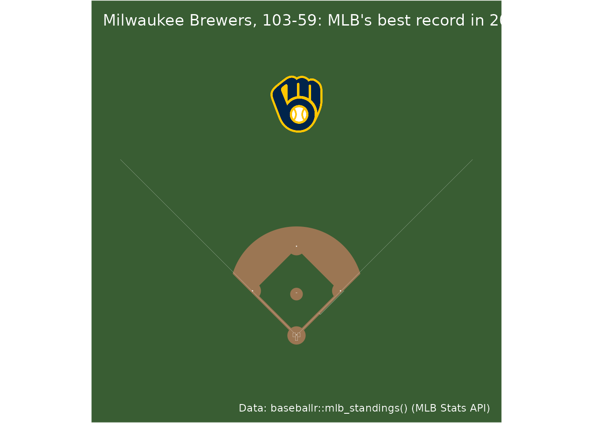
Any ggplot layer goes on a surface the same way, in the surface’s units: here feet from home plate, so a spray chart’s hit locations drop straight in.
10. A football drive chart
A field is a canvas for drives: one arrow per possession, from where
it started to where it ended, the winner driving left to right and the
loser right to left. nflverse’s play-by-play gives each drive’s start
and end as "SEA 25" (a team’s own 25) or
"NE 30" (the opponent’s 30); convert both to yards from the
offense’s own goal line. A field’s x runs from -50 (one
goal line) to 50 (the other) in yards. Super Bowl LX:
pbp <- nflreadr::load_pbp(2025) |>
as.data.frame() |>
filter(game_id == super_bowl$game_id, !is.na(posteam), !is.na(fixed_drive))
own_yards <- function(spot, team) {
side <- sub(" .*", "", spot)
yards <- as.numeric(sub(".* ", "", spot))
if_else(side == team, yards, 100 - yards) # "MID 50" is 50 either way
}
drives <- pbp |>
summarise(
start = first(drive_start_yard_line),
end = first(drive_end_yard_line),
result = first(fixed_drive_result),
.by = c(fixed_drive, posteam)
) |>
mutate(
from = own_yards(start, posteam),
to = if_else(result == "Touchdown", 100, own_yards(end, posteam)),
winner = posteam == champion,
x = if_else(winner, from - 50, 50 - from),
xend = if_else(winner, to - 50, 50 - to)
) |>
filter(!is.na(from), !is.na(to)) |>
arrange(fixed_drive) |>
mutate(lane = row_number(), .by = winner)
gap <- 25 / max(drives$lane) # spread each team's drives over its half of the field's width
drives <- mutate(drives, y = if_else(winner, gap * lane, -gap * lane))
count(drives, posteam, result)
#> posteam result n
#> 1 NE End of half 2
#> 2 NE Opp touchdown 1
#> 3 NE Punt 8
#> 4 NE Touchdown 2
#> 5 NE Turnover 2
#> 6 SEA Field goal 5
#> 7 SEA Punt 7
#> 8 SEA Touchdown 1
# both teams' primaries are navy, so the loser takes its secondary
loser <- setdiff(drives$posteam, champion)
drive_colors <- c(sdv_team_colors("nfl", champion), sdv_team_colors("nfl", loser, type = "secondary"))
drive_colors
#> SEA NE
#> "#002244" "#C60C30"
sdv_surface("nfl") +
geom_segment(aes(x = x, xend = xend, y = y, yend = y, colour = posteam), data = drives,
linewidth = 1.6, arrow = arrow(length = unit(0.12, "cm"), type = "closed")
) +
geom_text(aes(x = xend, y = y, label = result, hjust = if_else(winner, -0.1, 1.1)),
data = drives, size = 2.2, colour = "white"
) +
scale_colour_manual(values = drive_colors, guide = "none") +
labs(
title = sprintf("Super Bowl LX: %s %d, %s %d",
super_bowl$away_team, super_bowl$away_score, super_bowl$home_team, super_bowl$home_score
),
subtitle = sprintf("Every drive, in order from the middle out; %s's run left to right in the top half", champion),
caption = "Data: nflreadr::load_pbp()"
) +
titled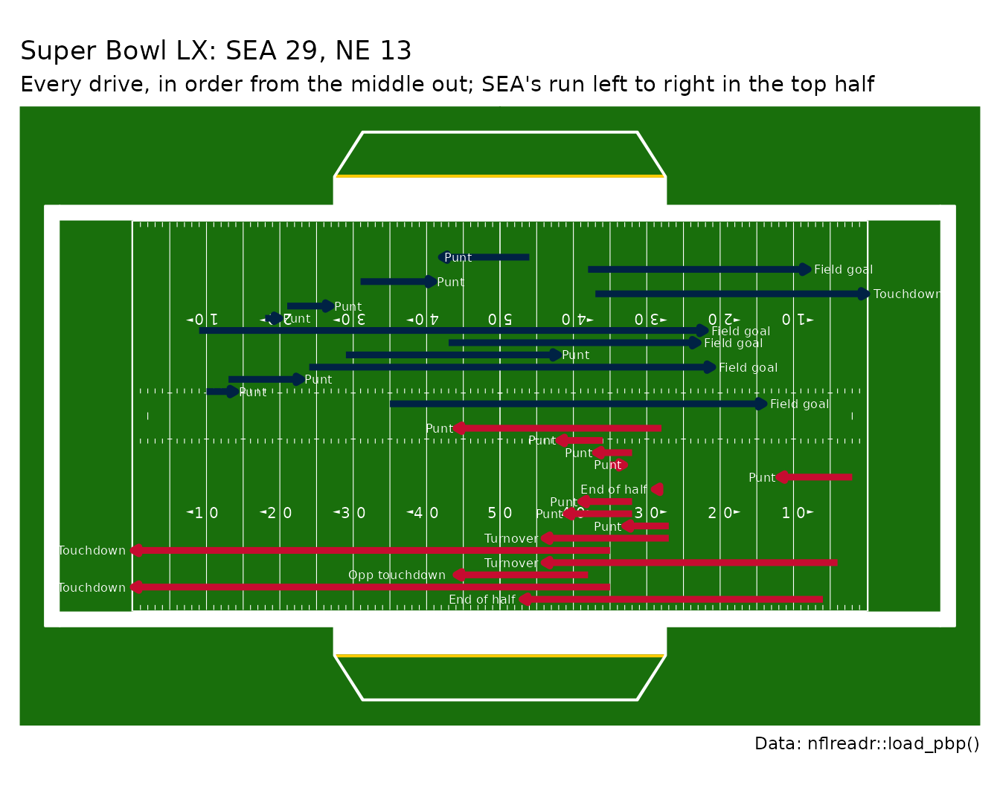
sdv_surface("nfl", team) paints both end zones in one
team’s color, so a two-team chart reads better on the plain field.